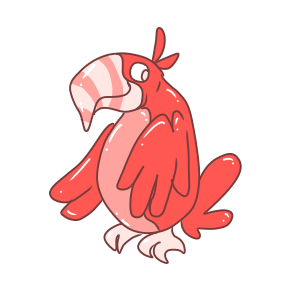

The Aviary - - - Games | Horoscope | Shops | Home | Your Pets
The Aviary - - - Games | Horoscope | Shops | Home | Your Pets
 The Aviary - - - Games | Horoscope | Shops | Home | Your Pets
The Aviary - - - Games | Horoscope | Shops | Home | Your Pets
Welcome to The Aviary! The Aviary is a virtual pet website all about birds and fun. On The Aviary, you own a coop, and can adopt up to 12 Strangebirds as pets.
With science, your Strangebird can become anything you want: a robot, a zombie, a chick again, or even slime.

Wow, those sure are 3 candy-red Tookins!
On The Aviary, you can play games, care for your pets, and run a shop!